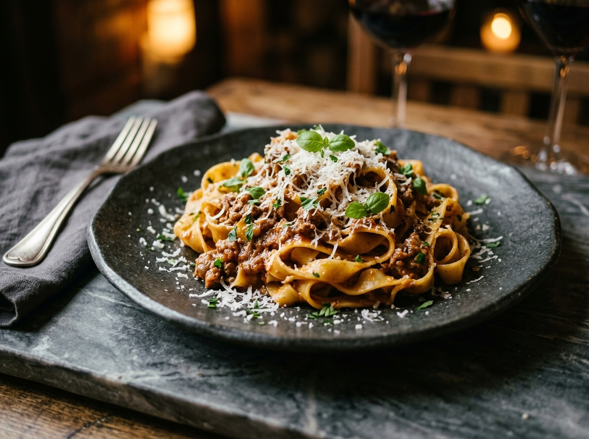

Starter Level
Building Kitchen Intuition
For curious beginners masteringpinch grips, precise knife cuts,pan heat, and salt layering.
- • Neapolitan Dough & Hydration
- • Fresh Egg Ribbon Pastas
- • Basic Knife Safety & Whetstones